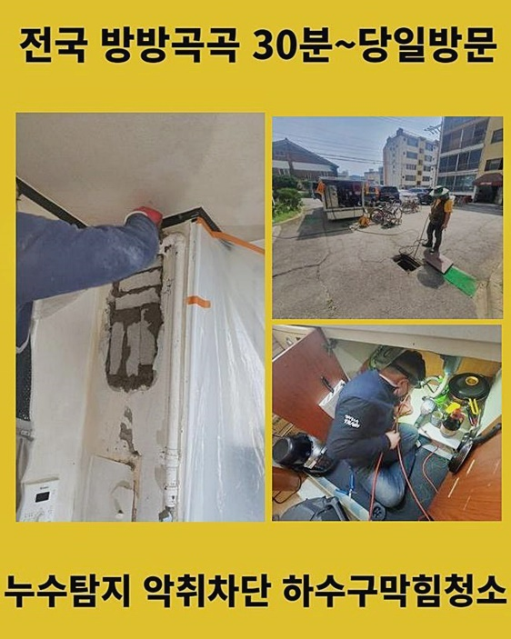
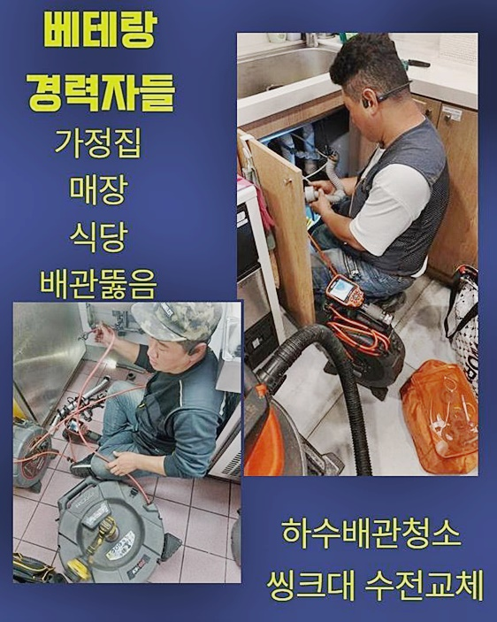
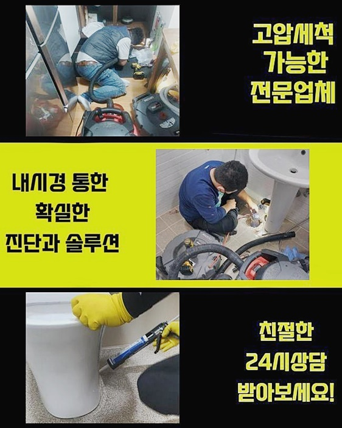
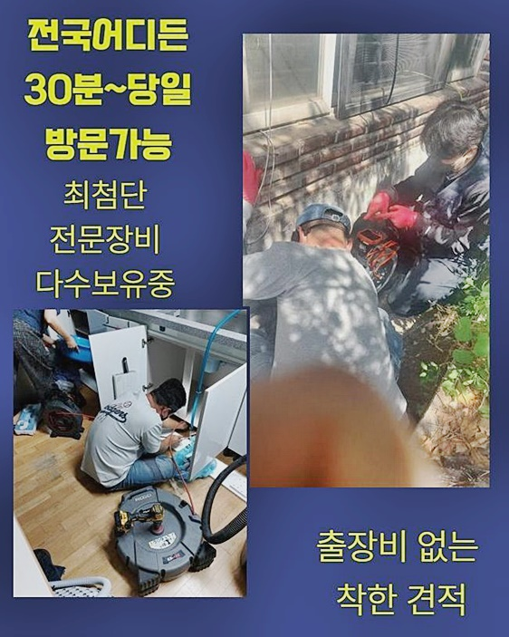
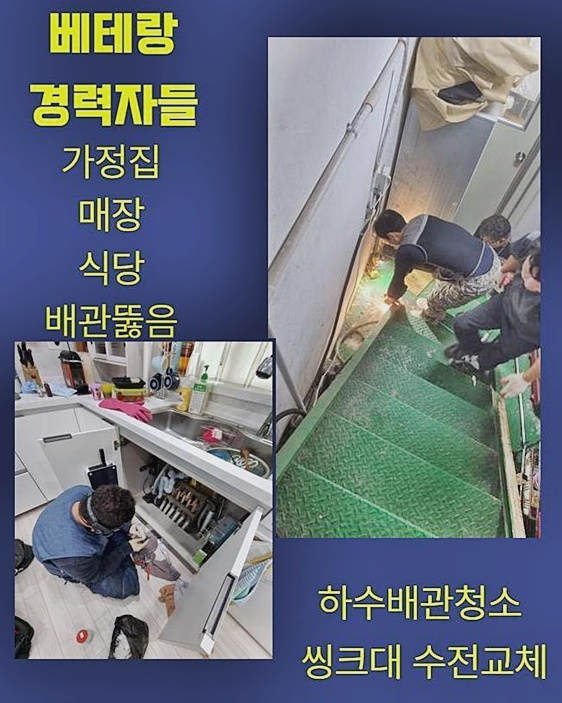
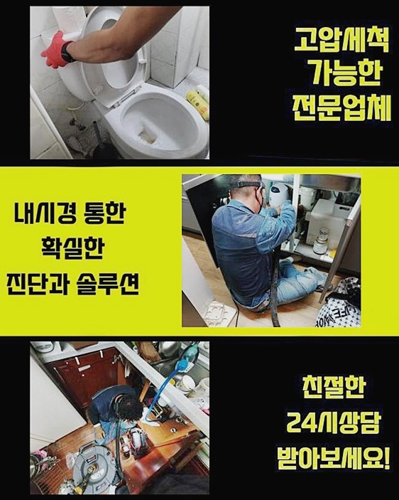

🏠 인천 심곡동오수관뚫음 오류왕길동 하수구뚫는업체 해결방법
용인시 처인구 배관막힘 전문 시공 후기

📋 작업 개요
- 위치: 용인시 처인구, 수원시 영통구, 화성시 동탄
- 서비스 유형: 배관막힘, 고압세척, 내시경점검
- 작업 일시:
- 업체명: 하수구수사대 (010-5615-2118)
🔍 문제 상황
인천 심곡동오수관뚫음 오류왕길동 하수구뚫는업체 해결방법
일상생활시 배관에서 막힘증상이 보이게되면 불편하게될거에요
하수구가막히면 배수가 정상적으로 이루어지지않아 막힘문제가 일어나는거에요
이번장소에선 상가의건물을 운영하시던 고객분께서 하수관에서 물이넘친다고 의뢰하셨는데요
배관끝까지 물이차오른 상황이라고 말해주셨습니다
점검을해보기위해 신속한 내방으로 방문했어요 하수구안쪽까지 살펴보지는 않았어도 알수있던건 배수구주위에 물이차올랐다는 것인데요
아래쪽부분에 많은양으로 오염물들이 쌓이면서 하수도막힘 증상이 발현된것으로 판단되었죠
심한냄새까지 발생된 상태였다보니 현장상태가 좋지못했죠
점검을해보고자 흡입장비를 준비했죠 하수도에 역류된물을 없애기위해서 흡입장비로 제거해보기 시작했답니다
넘쳐있는물이 소거되었죠 이런식으로 제거해주어야 하수구cctv를 활용하여 확실한 상태체크가 가능하답니다
하수구카메라로 하수구내를 확인해볼준비를 마칠수있었죠
들여다보았더니 기름슬러지들이 쌓여있는걸 살펴볼수가 있었네요
더진입해서 살피려고했지만 오염물로인해 진입자체가 어려웠는데요

🔎 원인 분석
💡 전문가 진단: 정밀 진단 장비를 사용하여 슬러지의 고착 여부를 판명하고 타격/세척 작업을 실시했습니다.
이럴땐 무리해서 투입하려고 하는것보다는 이물질부터 제거해서 통수해보는게 먼저인데요
현장상황마다 각자다르므로 이러한점에서 풍부한경력을 요구해요
입구부분부터 이물이 쌓여있었으므로 소거해드리기로 했답니다
분쇄장비를 이용해서 간단히 입구부분을 제거해드렸어요
통수를진행해서 분해기계를 내부로깊숙히 유입되게끔 해주었답니다
플렉스샤프트기는 무식하게 뾰족한형태로 이루어져있지않으며 체인형태로 갖추어져있어요
사슬체인이 배관아래를 회전하며 하수구의 오염물들을 제거해내는 방식이죠
그러므로 배수구에손상을 입히지않고 소거시킬수있어요
샤프트기계외에도 여러의 장비가있어요 막힌정도를 파악하여 알맞게끔 장비들을 활용해야한답니다
잘못쓰다가는 배관이깨져서 2차문제가 발현될수도있어요
고압청소과정을 거치지않더라도 대다수이물은 분쇄장비로 없앨순있죠
그렇다고해도 오늘현장과같이 막힘상태가 심각한경우 분쇄장비만을 이용해서는 제거가어려워요
간혹들어 철물점같은곳의 사장님께 부탁해서 막힘증세를 처리하시려는 고객분도 계십니다

🔧 작업 과정
기술자라면 문제가없더라도 일반적으로 업자분의경우 대부분 배관입구쪽만 뚫으려고하기에 저희에게로 재차방문요청을 하시기도하죠
이물제거를 진행할때 내시경기도 함께투입해 하수구속을 확인하며 이물을 없앴습니다
이물제거과정에서 무조건 하수구카메라를 통하여 하수구상태를 체크하며 작업해야만 한답니다
고착된 오염물이 샤프트기계를 만나게되니 분해가되며 소거되는모습을 확인할수있어요
배관내벽쪽을 청소해보기로했어요 세척과정이 이루어지며 단단한덩어리로 막혀버렸던 하수구중앙쪽이 뚫리게되며 통수를해결했어요
다른장비들이 정상적으로 유입될수있는 공간이완성되었죠
고착된슬러지가 발견되었으므로 오늘현장에선 고압세척기계를 이용해서 시도해야해요
트럭과 연결되어진 세척기계를 꺼내서 쌓인 잔해물질들을 제거하기 시작합니다
슬러지때문에 빈공간없이 막힌것이므로 밀어내주면서 없애면되죠
고압세척의 장점은 이물질제거말고도 깔끔하게 하수구세척까지 진행할수있어요
그렇지만 하수도의내구성을 신경쓰지않고 진행하게될경우 강력한수압으로 인해서 배수관이 감당하지못하고 파손될수가있어요
손상이발생하면 하수도공사까지 진행될수있는데요 2차피해가 일어나지않도록 내부모습을 체크해가며 진행되고있으니 염려마시길바래요
최첨단도구를 활용해서 잔여물이있는 위치를 신속하게 제거해내면 된답니다
이물질이쏟아지며 막혔던곳이 뚫리는걸 살필수있습니다
하수도에 그대로빠지게둘경우 다른배관에 잔해물들이 쌓이게되며 재발문제가 발현되게됩니다
그러므로 이물질들을 건진후 따로처리해봐야 한답니다 잘게분해되서 흘러나온 슬러지가많았어요
원활히분해가 진행이되지 못한곳을 처리해보기위해 배관내부로 샤프트기를 집어넣어 없애면돼요
하수구CCTV를 이용해서 상황에맞는 작업으로진행되니 우려하지마세요!
쌓인석회물을 말끔히 분해한뒤 석션을사용해 잔여물을 제거했어요
세척과정이 이루어질때 중요하다고 말할수있는것은 내시경으로 확인했을때 잔해물이 발견되지않아야 하는거랍니다
세세한작업이 이루어지지못하면 같은문제로 막힘이일어나요 배수구에서 깨끗한물이 빠져나오게끔 작업해드렸어요


✅ 작업 완료
배관속에 가득차있던 잔여물이깨끗히 해결된상태임을 파악했어요
막히는일이 없게끔 미리점검을하여 세척해보시는걸 추천드렸죠
많은하수가 흘러다니는 통로이기때문에 주기적인 관리를통해 배수관을안전히 이용해보시기 바래요
전국어디든지 1시간안쪽으로 방문이가능하고 투명한 작업과정으로 안내해드리고 있사오니 안심하셔도 괜찮습니다
이밖으로도 해소되지 않으신부분이 있다고한다면 문의하시면 자세히 상담진행 도와드리려고하니 마음편히 문의바래요
막히는현상은 방치하게될경우 심화될수있으니 방치하지말고 막힘이 보이는즉시 대처하시는걸 권장드리겠습니다



⚠️ 하수구 배관 막힘 예방 및 관리 가이드
- ✅ 머리카락, 비닐, 물티슈 등 물에 분해되지 않는 이물질은 절대 흘려보내지 마세요.
- ✅ 기름기 많은 식기는 설거지 전 키친타올로 먼저 기름때를 닦아내세요.
- ✅ 주기적으로 배수구에 뜨거운 물을 가득 부어주어 유지방 고착을 방지하세요.
- ✅ 작업 후 1년 이내 재발 시 무상 A/S 보증 서비스를 제공합니다.
💡 핵심 정리
- 확실한 장비 작업(내시경 점검 및 샤프트 스케일링)으로 원인을 뿌리 뽑습니다.
- 작업 후 1년 이내에 동일한 부위 재발 시 100% 무상 A/S 서비스를 보장합니다.
- 서울 · 경기 · 인천 전 지역에 24시간 언제든 긴급 출동할 수 있도록 항시 대기 중입니다.
❓ 자주 묻는 질문 (FAQ)
🚨 용인시 처인구 배관막힘 문제로 고민이신가요?
정확한 원인 진단과 확실한 시공으로 재발 없는 해결을 약속드립니다.
24시간 긴급 출동 | 서울 · 경기 · 인천 전지역 | 1년 내 재발 시 무상 A/S